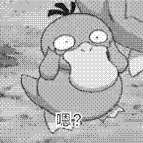
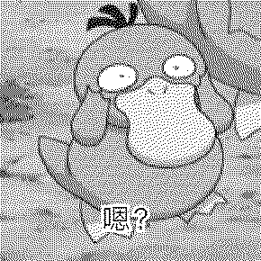

前言
-
本人并非相关专业，写的东西也并非专业的内容，仅作科普。可能会有错误和纰漏，还请指正。本文更注重于原理讲解和现象分析，而不会在意具体实现。因为当你了解原理后，你可以非常容易编写出相关代码。
-
本文写的都是一些耳熟能详的东西，目前决定写完幻影坦克、无影坦克及图像抖动。
-
本文可能出现大量自定义的术语，可能存在相关的术语，但是我懒得考究。
-
本文的颜色采用张量表示，采用Einstein求和约定。
-
相关的C语言代码开源在Ductory/ducklib: C libs (github.com)，采用Windows原生的Gdiplus（直接从高中写的VB6代码移植）。
幻影坦克
约定
-
所有颜色分量和alpha的取值均归一化。
-
像素将用RGB格式表示，alpha单独讨论。
简介
幻影坦克事实上就是生成一张双层图（半透明图），使其在不同颜色的背景（通常是白色和黑色）下能显示出不同的内容。对于半透明图片，一般采用线性插值的方式计算其显示像素[^1]
Cm=Cfα+Cb(1−α)
其中，Cm为图片混合后的像素，Cf为图片的实际像素，Cb为背景颜色。
当图片在白色背景下显示时，我们将其称为表图(S)。当图片在黑色背景下显示时，我们将其称为里图(H)。最后我们生成一张半透明的图片，我们将其称为混合图(M)。
为何将白色背景显示的图片称为表图呢？以贴吧为例，一般用户不会打开深色模式，故图片默认以白色背景显示，点击后才会以黑色背景显示。
故而，我们便知道了深色模式无法查看幻影坦克的原因：倘若你打开了深色模式，默认便以黑色背景显示，显示出来的直接就是里图，也就看不到表图了。
需要注意的是，微信显示图片时始终使用白色背景，因此无法显示里图[^2]。
灰度幻影坦克
接下来我们将由浅入深地讲解幻影坦克。先从最常见也最为简单的灰度幻影坦克讲起。
在理想的情况下，我们应当有如下关系[^1]
S=Mα+1⋅(1−α)H=Mα+0⋅(1−α)
故有
αM=1−S+H=αH
由于α∈[0,1]，故应当有S⩾H。倘若H>S，则α只能取到1，从而得到M=H。这也就是说，在表图中会将里图的内容显示出来。为了避免此情况的发生，我们需要尽可能地增大S而减小H。而这便是为何幻影坦克常常是表图亮而里图暗的原因。
由于我们更关注里图，不妨来讨论一种特殊情况，即表图为全白，亦即，S≡1。此时，α=H,M=1，即表图仍是全白，而且我们可以做到无损地隐藏里图。
更进一步
让我们来考虑全彩的幻影坦克。这也是比较常见的，譬如朝夕图。此时，由于每个像素点有三个分量(r, g, b)，为了简洁起见，我们使用张量来表示，即
Ci,i=r,g,b
类似灰度幻影坦克，我们不难得到
Si=Miαi+1⋅(1−αi)Hi=Miαi+0⋅(1−αi)
这看起来似乎和我们上文讲的没有任何区别。但实际上，对于每个像素，我们只有一个alpha通道而非三个，因此，我们只能有标量α′而非张量αi。上面给出的理想公式是无法做到的。
全彩幻影坦克
接下来考虑双图。相较于灰度幻影坦克，全彩的情况会稍稍更复杂一些。为了助于理解，我们将用这两张图来作为例子进行讲解。
正如上文所说，全彩幻影坦克的理想公式是无法做到的。因此，我们只能退而求其次，尝试生成一张混合图M′（其在白色背景下显示为S′，在黑色背景下显示为H′），使得S′和S以及H′和H尽可能接近。为简单起见，我们先在RGB空间下讨论。
我们采用RGB空间下的欧拉距离DRGB(A,B)=(Ai−Bi)2来评估两种颜色的差距，并这样评估混合图的效果：E=D2(S′,S)+D2(H′,H)。我们的目标是minE。
类似的，我们有如下公式
Si′Hi′=α′Mi′+1−α′=α′Mi′
由于Si′、Hi′、Mi′均是未知的，这给我们求解带来了很大困难，我们不得不做近似。我们记下标A为在A′≈A,A=S,H,M的条件下。故有
EM=(Mi−1)2(α′−αi)2+Mi2(α′−αi)2=[Mi2+(Mi−1)2](α′−αi)2
要让E尽量小，则要有
dα′E=2[Mi2+(Mi−1)2](α′−αi)=0
故
αM′=Mi2+(Mi−1)2[Mi2+(Mi−1)2]αi=Hi2+(Hi−αi)2[Hi2+(Hi−αi)2]αi(1)
同样的，我们可以推出：
αS′=αH′=αiˉ(2)
公式(2)较为平庸，因此让我们基于公式(1)生成一张混合图。检查效果，还是较为不错的。

接下来我们关注一下细节。注意山峰，被阳光照射的雪看不见了。让我们来进行分析。我们给出：
Sr≫Hr,Sg≫Hg,Sb<Hb。同时，我们有αr≈αg≈0.5,αb=1。
不难注意到，蓝色分量的权重远大于另外两者，于是我们得到了较大的α′。又Mi=Hi/α′，因此Mr, Mg较小，Mb较大，故而最终呈现出了蓝色的山顶，且白天和夜晚的山顶差别并不大。对于白天亮灯的情况也可以类似地进行分析。要想给出更好的显示效果，必须要让此处的αi尽可能小，因此，我们要Si尽可能大于Hi，这就类似于我们在灰度图中讨论的了。
预处理
接下来我们讨论如何预处理表图和里图，使得生成的混合图能够拥有更好的效果。事实上，灰度幻影坦克也可以预处理表图和里图，只需将其每个灰度值直接乘上一个因子即可。要让表图变亮，那么只需因子大于1；要让里图变暗，只需因子小于1。那么对于全彩的情况，我们是否可以这样操作呢？可以，但是我们可以看到，有时候效果并不好。当因子缩放过度时，很容易遇到α′过小的情况，此时，表图中的这些位置全白，里图中的这些位置全黑，非常影响观感。我们可以采用另一种处理方法：Ci′=G+c(Ci−G)。其中，G为像素的灰度，c为因子。如此一来，里图的分量会向其灰度靠近，而表图则是偏离。虽说这样可以一定程度上减缓上述情况，但是，这种方法的效果实在是一言难尽。是一种更优的方案是将RGB空间转为HLS空间，并在HLS空间增大/减小亮度后转回RGB空间。但事实上，即便不进行预处理，效果也已经不错了，毕竟色彩空间转来转去也很麻烦。
更优的全彩幻影坦克
接下来我们更进一步，我们之前在RGB空间中来评估效果，现在我们在Lab空间来评估。
说是在Lab空间，但也没有完全在，因为在Lab空间分析实在太吃力。我们采用RGB空间下的近似公式（即加权欧几里得距离公式）[^3]：
rˉ=2Ar+BrΔR=Ar−BrΔG=Ag−BgΔB=Ab−BbDLab=(2+256rˉ)ΔR2+4ΔG2+(2+256255−rˉ)ΔB2
我们这样评估混合图的效果：E=D2(S′,S)+D2(H′,H)。
我们先计算EH。记
rˉ=2Sr′+Sr=22Hr+2−α′−αrΔR=Sr′−Sr=αr−α′ΔG=Sg′−Sg=αg−α′ΔB=Sb′−Sb=αb−α′
同样的，我们要有
dα′EH=−[5121(ΔR2−ΔB2)+128rˉ(ΔR−ΔB)+4ΔR+8ΔG+5128127ΔB]=−[5121(αr2−2αrα′−αb2+2αbα′)+2562Hr+2−αr−α′(αr−αb)+4αr+8αg+5128127αb−17128127α′]=[A1281(αr−αb)+17128127]α′−[B5121(αr2−αb2)+2562Hr+2−αr(αr−αb)+4αr+8αg+5128127αb]=0
故
αH′=AB(3)
同样的，
dα′ES=5121(ΔR2−ΔB2)+128rˉ(ΔR−ΔB)+4ΔR+8ΔG+5128127ΔB=5121(αr2−2αrα′−αb2+2αbα′)−2562Hr+α′−αr(αr−αb)−4αr−8αg−5128127αb+17128127α′=−[A1281(αr−αb)−17128127]α′−[B−5121(αr2−αb2)+2562Hr−αr(αr−αb)+4αr+8αg+5128127αb]=0
有
αS′=−AB(4)
至于M′≈M的情况，处理方法也是类似的，不过结果将会十分复杂，这里就不推导了。此三种情况的效果都是差不多的。
我们使用公式(3)来生成一张混合图。

可以看到，此算法的效果略好于(\ref{rgb1})的算法，但事实上也不会好多少，因为每个像素只能共享一个alpha通道制约了它的上限。
无表全彩
我们考虑一种特殊情况。类似灰度幻坦部分说的表图为全白的情况，假设我们完全不在乎表图的表现，而只期待里图能得到较好的显示效果。注意，我们的目的不是让里图得到最优的显示效果，因为显而易见的，这会得到Mi=Hi,α′=1的结果，这便毫无意义了。
这种情况可以用来处理全彩的涩图和剑阵图，能在一定程度上防止其被吞。我们采用一种朴素的算法，即令α′=max{αi}，此时有Mi′=Hi/α′。这只是一种经验公式，并不代表它有着最优的效果。Mi′和Mi会比较接近，但混合图偏暗一些。
实例：基于全彩幻坦的二维码图像
详细描述请见参考文献[^2]。我们翻译一下：minE,E≡D2(S′,S)。
事实上，我们已经给出了公式，RGB空间和Lab空间下的αH′就是我们需要求的。
对于RGB空间，我们可以推导一下αM′，因为这与上文的结果不同。
dα′EM=2(Mi−1)2(α′−αi)=0
故
αM′=(Mi−1)2(Mi−1)2αi=(Hi−αi)2(Hi−αi)2αi
无影坦克
简介
无影坦克实际上是最低有效位(Least Significant Bit, LSB)算法的民间称呼。这是一种图像隐写技术，由于人眼分辨能力有限，我们很难注意到细微的差别。因此很容易产生这一想法：改变像素点每个分量的最低位（或若干个低位），并将其用于存储额外的数据，而产生的细微变化不会被人眼所察觉[^4][^5]。
缺陷
我们可以注意到，无影坦克的鲁棒性是非常糟糕的。只有我们获取的是原图，我们才能正确地进行解码（现形）；但凡图片被平台稍加处理，譬如压缩或添加水印，我们隐写的数据便会面目全非。糟糕的是，无影坦克的生存空间正在不断缩小。放眼当今互联网，已经很难有什么平台不会对你的图片进行二次加工。
此外，无影坦克的信息密度很低。由于我们只能使用每个分量的最低位（或若干个低位）来存储数据，因此我们不能隐写大量的数据，所以无影坦克通常用来隐写种子、磁力、小图等少量数据。
最后，幻影坦克并没有一个统一的标准。当我们隐写数据时，我们显然要加上一个元数据来指明隐写数据的相关信息。然而，对于这个数据组织方式并没有一个公开的统一标准文档。尽管大量开发者尽可能去遵循同一约定，但该怎么隐写仍是一家之言，在发送张无影坦克图时也得带上相应的解码工具/网址，否则便可能无法正确解码。
推荐标准
目前一般采用如下标准[^6]
1
2
3
4
5
6
7
8
9
10
11
12
13
| magic ; data[0]{0-2}==0, data[1]{0-2}==3, data[2]{0-2}为每字节填充比特数(1~4)
file_size: String
\x01
file_name: String
\x01
file_type: String
\x00
读写字节时队列向左增长，不使用alpha
e.g. decode
xxxxx110 xxxxx101 xxxxx001 alpha xxxxx010 ...
[ ] queue 110 < 101 < 001 < 010 ...
=> [11010100] queue 1 < 010 ...
|
不过，由于大部分情况下我们并不关心文件名，而常用的文件类型可以直接给一个特定的值，我们可以对其优化：
1
2
3
4
5
6
7
| magic: data[0]{0-2}==1, data[1]{0-1}==2, data[2]{0-1}==每字节填充比特数-1, data[2]{2}=={0: 不用alpha, 1: 使用alpha}
type: BYTE ; 文件类型，见表
flag: BYTE ; 见表
size: UINT ; 文件大小
[
opt_data: VAR ; 扩展头
]
|
其中，
| 值 |
类型 |
| 0 |
unknown |
| 1 |
text |
| 2 |
bmp |
| 3 |
jpeg |
| 4 |
gif |
| 5 |
tiff |
| 6 |
png |
| 7 |
webp |
| 8 |
zip |
| 9 |
7z |
| 10 |
torrent |
| 11-255 |
自定义 |
| 标志 |
作用 |
| {0} |
启用扩展头 |
| {1-7} |
自定义 |
图像抖动
简介
我们知道，当图像的颜色深度较低时，每个像素可以表示的颜色数量有限，这可能会导致严重的颜色带状现象和颜色失真。
而图像抖动算法的核心思想是通过在图像中引入一些噪声，并将噪声扩散到相邻部分来近似，使得在视觉上能够模拟出更多的颜色（人眼将扩散感知为混合色）。例如，在黑白打印机或只有黑白显示能力的设备中，通过抖动算法可以产生不同灰度级别的效果[^7][^8]。
事实上，图像抖动有非常多的算法，比如有序抖动、随机抖动等等。在这里我们主要讲讲有序抖动和Floyd-Steinberg抖动算法。为了助于理解，我们将用这张图来作为例子进行讲解。
灰度图像抖动
有序抖动
倘若我们直接简单粗暴地进行二值化，我们将得到以下结果：
我们可以看到，它丢失了很多细节，譬如阴影等。接下来让我们用有序抖动来进行抖动处理。
该算法通过将阈值图应用于显示的像素来减少颜色数，这里我们采用Bayer矩阵，它这样计算[^9]
M1M2n=O=(2n)21×[(2n)2×Mn(2n)2×Mn+3U(2n)2×Mn+2U(2n)2×Mn+U]
其中，O为零矩阵，U为全1矩阵。
让我们用该算法来生成图片，可以得到如下结果

这仍然是一张二值图像，但是人眼看上去却像一张灰度图像。我们用两种颜色模拟出了更多的颜色，这就是抖动的有趣之处。
Floyd-Steinberg算法
接下来我们介绍一下Floyd-Steinberg算法。这种算法基于误差扩散来实现抖动，将像素点量化误差加到相邻像素上以便后续处理。
误差通过以下方式加权扩散[^10]
[⋯163∗165167161⋯⋯]
其中，*表示当前正在扫描的像素，空白为先前扫描的像素，其余部分为扩散的权重。
让我们用该算法来处理一下

可以看到，效果也很不错。
全彩图像抖动
相较于灰度图，全彩图有RGB三个分量。要使用Floyd-Steinberg算法，只需每个分量分别处理即可。
我们主要讨论一下固定色表的全彩抖动，采用某游戏的16种羊毛色来作为色表。此时我们需要用最近邻搜索来查找色表中的哪种颜色与我们当前像素的颜色最为接近。由于颜色较少，即便使用暴力搜索也未尝不可。评估方法不再赘述，在幻影坦克部分已经给出。我们得到了以下图像
我们可以看到有些部分明显变色了。这是因为这张色表并不是一张好的色表，它所能覆盖的区域太小了。当有一片表外颜色的像素出现时，误差会越积越多，以至于所造成的影响远大于原像素，最后严重破坏了表现效果。
为了解决这一问题，我们可以采用一种非常简单的处理方法：确保当前颜色在我们设定的阈值之内。如此处理后，我们得到了如下图像
我们可以看到，这个问题被较好地解决了。
总结
本文对于三种算法的讨论都是浅尝辄止，事实上，每种算法都有着相当丰富的内容，感兴趣的读者可以自行搜索学习。
参考文献
[^1]:偶尔有点小迷糊. (2021, March 8). 『整活』幻影坦克 基础版 [video]. Bilibili. https://www.bilibili.com/video/BV1kV411v7fR
[^2]:偶尔有点小迷糊. (2024, March 25). 【揭秘】在任意图片中隐藏二维码 肉眼不可见但微信可扫 [video]. Bilibili. https://www.bilibili.com/video/BV1Yu4m1T7B8
[^3]: Riemersma, T. (2019). Colour metric. CompuPhase. Colour metric (compuphase.com)
[^4]:偶尔有点小迷糊. (2021, May 28). 『整活』建议改为：图片套娃 [video]. Bilibili. https://www.bilibili.com/video/BV1Vv411V7Yo
[^5]:Ele实验室. (2022, February 24). 隐写术鉴赏 [video]. Bilibili. https://www.bilibili.com/video/BV1Su411X7vY
[^6]:DGCK81LNN. (2022, February 22). tieba_tank_decoder v1.2.1 [code]. GitHub. sandbox/wytk_optimize/tieba_tank_decoder.user.js at main · DGCK81LNN/sandbox (github.com)
[^7]:oooooohmygosh. (2021, June 23). 你能把两个色块拼成渐变色吗？- oooooohmygosh [video]. Bilibili. https://www.bilibili.com/video/BV1Kb4y1C7fo
[^8]:Wikipedia contributors. (n.d.). Dither. Wikipedia. Retrived March 30, 2024. Dither - Wikipedia
[^9]:Wikipedia contributors. (n.d.). Ordered dithering. Wikipedia. Retrived March 30, 2024. Ordered dithering - Wikipedia
[^10]:Wikipedia contributors. (n.d.). Floyd–Steinberg dithering. Wikipedia. Retrived March 30, 2024. Floyd–Steinberg dithering - Wikipedia